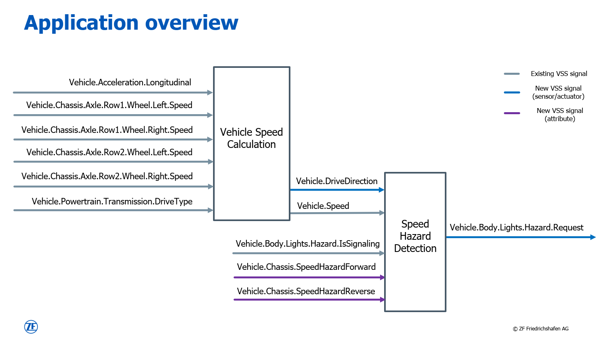
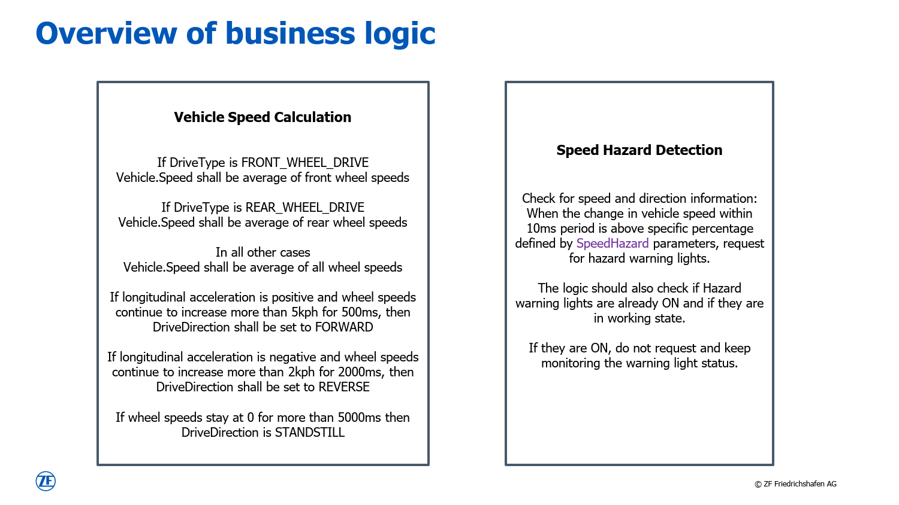

Blueprint project (VSS + VAF)#
This blueprint project illustrates the combined usage of the VSS editing tool (as contributed by ZF Group) and the Application Framework (as contributed by Vector Informatik GmbH).
Overview#
An overview of the sample application for this project is given in the figure below.

VSS catalogue#
The signal definitions partly originate from the original VSS catalogue and are marked in gray. New, and therefore custom signals for this application, are added to the same structure by using the vss-gui-tool, which is part of this Eclipse project. Those are marked in blue and purple.
The outcome of this step is filed in JSON format and located in model folder of this blueprint project (see vss-sample-zf.json).
From here, the application-framework for design, implementation, and test of this application.
VAF interface project#
This file is consumed as input artifact by the VAF interface project. Based on the catalogue, the following interfaces are defined in the Config as Code file interfaces.py:
SpeedIf
SpeedCalculationIf
HazardIf
HazardDetectionIf
Finally, the complete interface definition gets exported to the VAF model format in JSON.
Application modules#
The model is used as input for the application module projects. For this project, there are two of them to realize the functionality:
Those projects hold the actual implementation of the business logic, which is specified in the figure below. Also unit tests with Google Test are possible and supported by the Application Framework as part of this project.

On top, a third application module (TestModule) is created. It is used later to connect to the open ends of the arrows as illustrated above and by that allow testing.
Integration project#
The final project is the Integration project. This is where the above application modules get instantiated and connected among each other. This project provides two flavors.
Integration of all modules in one executable. See integration_project.py for the details.
Integration of VehicleSpeedCalculation and SpeedHazardDetection in one executable and TestModule in a separate one. The connection between the them is realized via Vector SIL Kit. See integration_project_silkit.py for the details.
To switch between the two variants, modify the file model.py:11-12 accordingly and trigger the following two commands afterwards to re-generate and re-build the application:
vaf model generate
vaf make install